By: CS2103-AY1819S1-W14-2 Since: Sep 2018 Licence: MIT
1. Introduction
Welcome to ThanePark! ThanePark is a theme park management application that assists theme park managers and operators in obtaining ride information readily. Using the keyboard, you can easily access features such as creating rides, updating ride information, finding rides with short waiting time and more.
Get started now by heading over to Section 3, “Quick Start”. Enjoy!
2. About
This user guide introduces you to ThanePark, provides detailed instructions to set up and gives you an overview of the available features. No prior technical knowledge is required to use ThanePark.
For frequently asked questions, check out Section 5, “FAQ”.
For a brief summary of all features, check out Section 6, “Command Summary”.
3. Quick Start
Steps to set up ThanePark:
-
Check that you have Java version
9or later installed in your Computer. -
Download the latest
thanepark.jarhere. -
Copy the file to the folder you want to use as the home folder for your ThanePark.
-
Double-click the file to start the app. The GUI should appear in a few seconds.
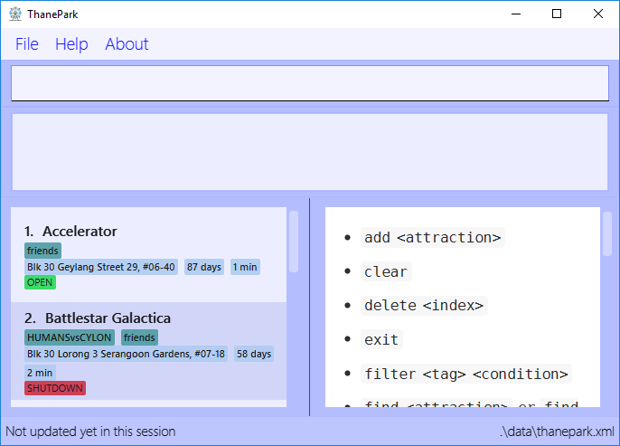
If you left click on the any ride in the list, it will show the ride information in a window similar to below:
The bar at the top of the window allows you to access Help or About. The About option on the navigation bar opens an About Us window.
|
You will not be able to customise the image for rides. This feature will only be implemented in v2.0.Additionally, note that you may not enter more than 250 characters inside the CommandBox.
Any character past the 250th will be forcefully truncated. This is to guard against abuse.
|
Congratulations! You have successfully set up ThanePark!
Type the command in the command box and press Enter to execute it.
e.g. typing help more and pressing Enter will open the help window.
Type some of these commands to try out ThanePark:
-
viewall: lists all rides in your theme park. -
exit: exits the app.
Refer to Section 4, “Features” for details of each command.
4. Features
This section contains information of all commands used in ThanePark.
Command Format
-
Items in chevrons
<>denotes compulsory field.
Example:add <attraction><maintenance><waitTime><zone> -
Items in square brackets
[]denotes optional field.
Example:help [more] -
Items in curly brackets
{}denotes keystroke.
Example:{tab}is the TAB keystroke. -
Items ending with ellipses
…denotes variable number of arguments.
Example:filter <tag> <condition> [[tag] [condition]…] -
Parameters with prefix
/can be in any order
Example: if the command specifies n/name p/zone, p/zone n/name is also acceptable.
4.1. Manage Attractions
This section contains all commands related to managing attractions.
4.1.1. Adding attractions: add
Adds an attraction by name with the information.
Format: add <n/attraction> <m/maintenance> <w/waitTime> <z/zone> [t/tag(s)]
A ride can have any number of tags (including 0).
| Maintenance and waiting time should only contain positive integers with at least 1 digit long and should be less than 1 billion. |
| The length limit for zone and tag(s) field is 40 characters. |
Examples:
-
add n/Transformers m/1 w/30 z/John street, block 123, #01-01
-
add n/The Mummy m/3 w/45 z/311, Clementi Ave 2, #02-25 t/3D t/indoor
4.1.2. Deleting attractions: delete
Deletes the specified attraction from ThanePark.
Format: delete <index>
-
Deletes the ride at the specified index.
-
The index refers to the index number shown in the list of displayed rides.
-
The index must be a positive integer 1, 2, 3, …
Examples:
-
viewall
delete 2
Deletes the 2nd ride in ThanePark. -
find Puss in Boots' Giant Journey
delete 1
Deletes the 1st ride in the results of the find command.
4.1.3. Updating information of attraction: update
Updates the details of the ride identified by the index number used in the displayed ride list.
| The length limit for zone and tag(s) field is 40 characters. |
Format: update <index> <prefix/value>
Parameters: INDEX (must be a positive integer) [n/NAME] [m/MAINTENANCE] [w/WAITING_TIME] [z/ZONE] [t/TAG].
Examples:
-
update 1 m/90
Updates the 1st ride in ThanePark. -
update 2 m/90 w/60
Updates the 2nd ride in ThanePark.
| This command cannot update the waiting time and maintenance field when the ride is not open. |
| Maintenance and waiting time should only contain positive integers with at least 1 digit long and should be less than 1 billion. |
4.1.4. Shutting down attraction: shutdown
Closes the ride for the day. Display statistics for the ride on that day.
Format: shutdown <index>
| This command will reset the waiting time field to zero. |
Example :
As seen in the diagram below, the status of the 1st ride changes from
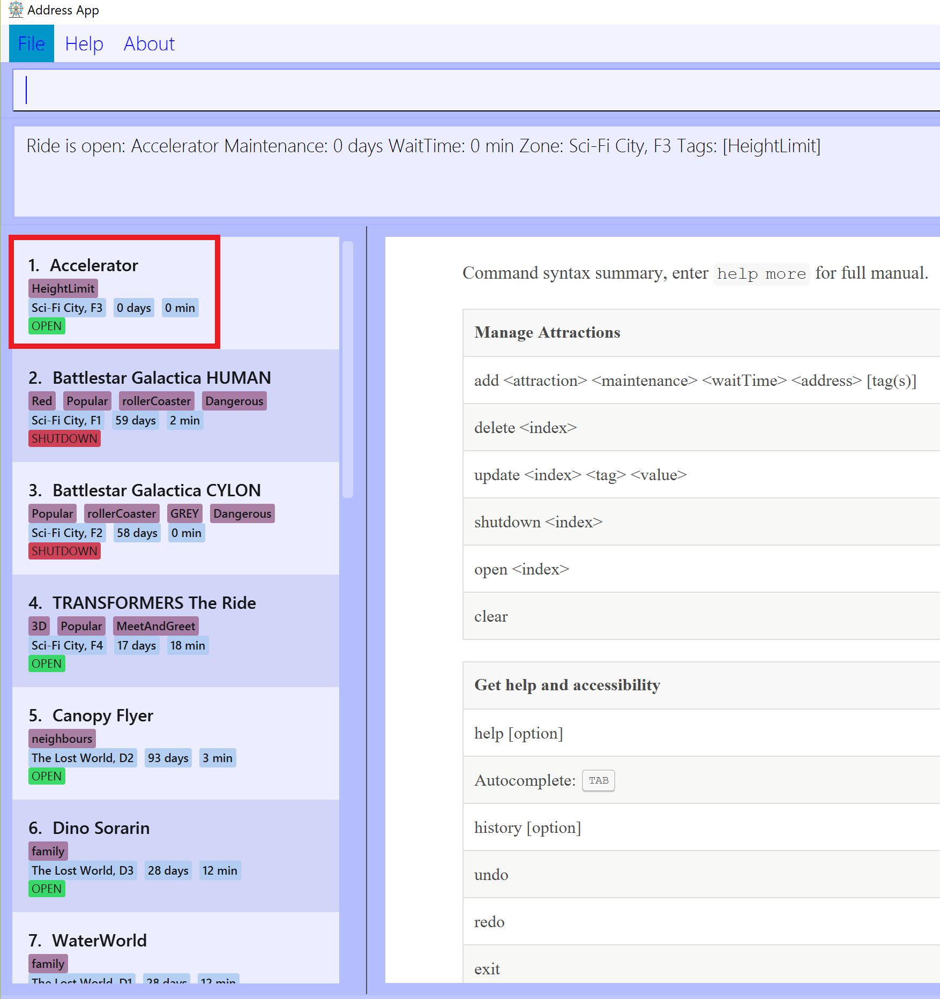
Figure 1. Before executing
shutdown 1
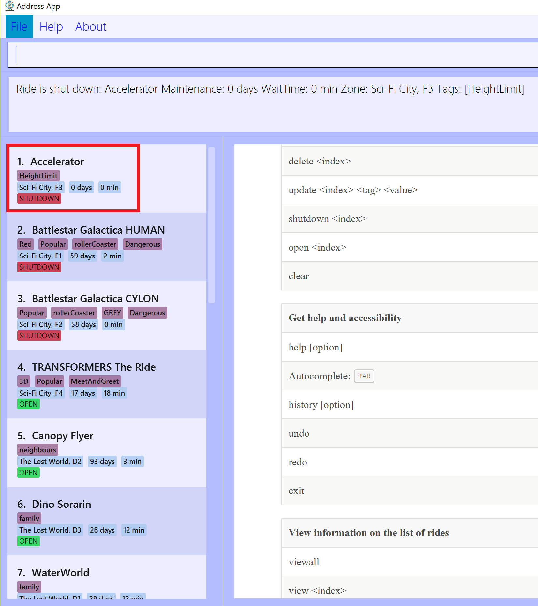
Figure 2. After executing
shutdown 1After |
4.1.5. Opening attraction: open
Opens the ride for the day. Display statistics for the ride on that day.
Format: open <index>
Example:
-
open 2
Opens the 2nd ride in ThanePark.
| This command also resets the waiting time field to zero. |
4.1.6. Closing attraction for maintenance: maintain
Closes the ride for maintenance. Display statistics for the ride on that day.
Format: maintain <index>
| This command also resets both waiting time and maintenance fields to zero. |
4.1.7. Clearing all entries : clear
Clears all entries from the address book.
Format: clear
4.2. Manage Commands
This section contains all commands related to managing commands.
4.2.1. Viewing help: help
Displays short summary of important commands. You should see a similar-looking summarized help
sheet as shown below.
Format: help
Extended usage of help command: If you want to see the full help manual, use help [more].
If you want to see the full help for a specific commandWord, use help [commandWord].
Should you provide an invalid [commandWord], you will be shown the default short help message.
Please note that any arguments beyond the 2nd position will be discarded and ignored.
|
Please note that the short help only shows the rough syntax of commands. If you want the full help,
do refer to this User Guide. You should also note that help will cause the currently selected Ride to be deselected.
|
Examples:
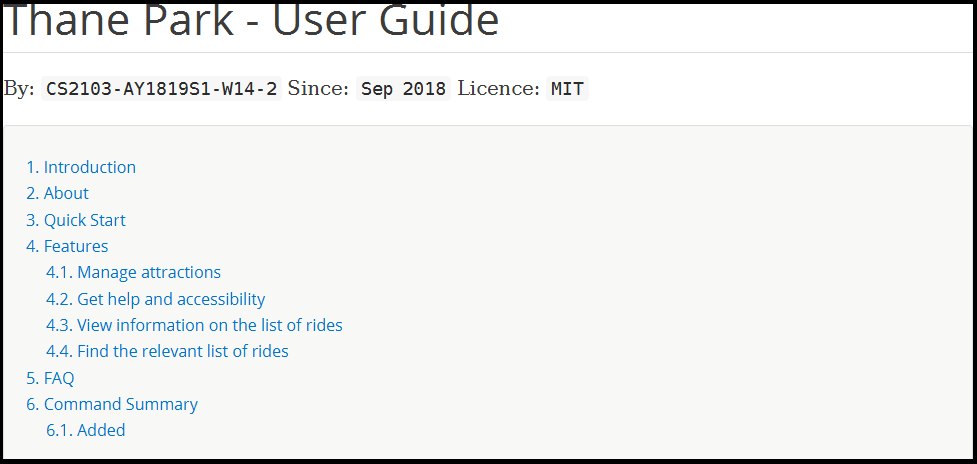
|
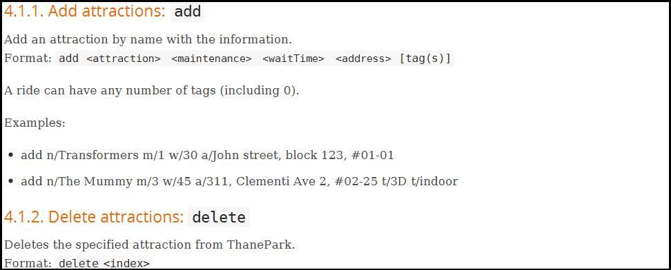
|
4.2.2. Suggesting commands: {tab}
Displays suggested list of commands when TAB is pressed.
Format: TAB
| If you want to see common usage, skip to examples to view common usage. The full functionality of suggesting commands can be quite heavy. |
| Extended usage of suggesting commands: |
| Action | State of application | Expected Output |
|---|---|---|
TAB |
|
|
TAB |
|
|
TAB |
|
|
TAB |
|
|
TAB |
|
|
TAB |
|
|
ENTER |
|
|
ENTER |
|
|
ENTER |
|
|
ENTER |
|
|
Examples:
|
4.2.3. Viewing history of previous commands: history
Displays previous user inputs during this session. Does not include the executed history itself.
Format: history [more]
Extended usage of history:If you wish to get a report of all commands executed across sessions, use history more and a report will be generated.
|
The xml file produce by ThanePark was not designed for you to read.You may experience loss of command history information when commandHistory.xml exceeds 5MB
or is unintentionally modified.
|
Examples:
|
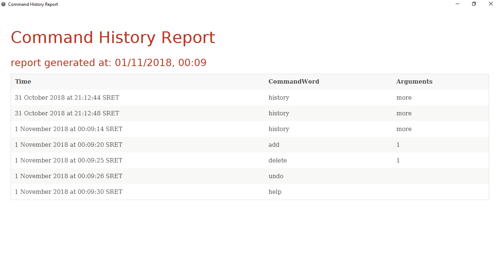
|
4.2.4. Undoing commands: undo
Undo previous command during current session.
Format: undo
Examples:
|
4.2.5. Redoing previously undone commands: redo
Reverse the previously undone commands during current session.
Format: redo
Examples:
|
4.2.6. Exiting ThanePark: exit
Exits the ThanePark application.
Format: exit
4.3. View information of rides
This section contains all commands related to both viewing information of specific rides and viewing different lists of rides.
4.3.1. Viewing detailed information of a specific ride: view
Displays all available information about a single ride on the list of displayed rides.
The index field specifies the index of the ride that you want to view.
Format: view <index>
index should be a positive integer that is not larger than the size of the displayed list.
|
Example 1: Note how the information within the red box changes when
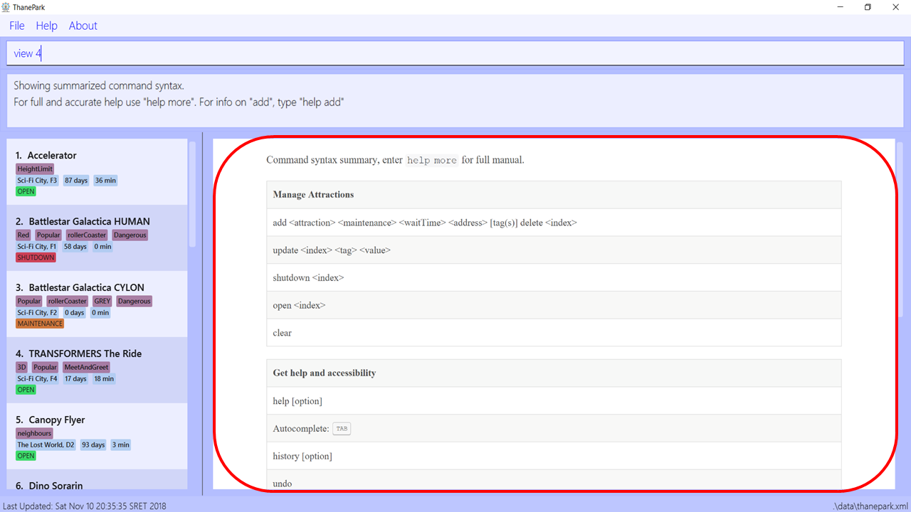
Figure 3. Before executing
view 4
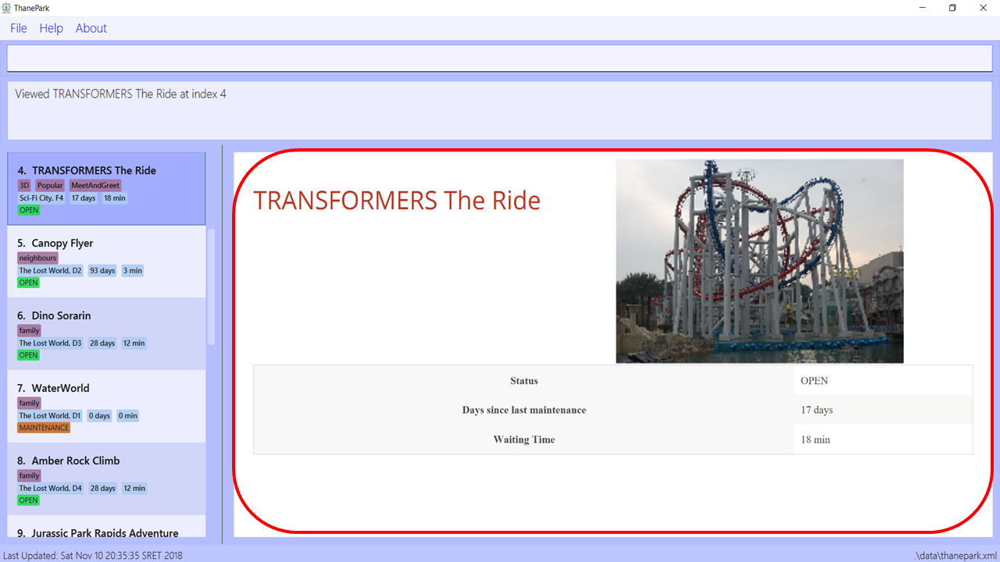
Figure 4. After executing
view 4When Example 2: Note how the information within the red box at the top changes when
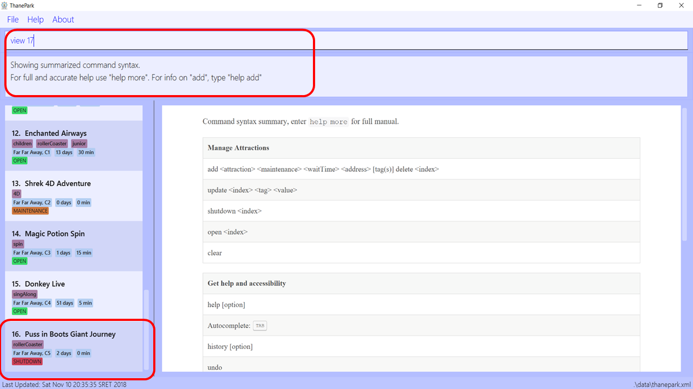
Figure 5. Before executing
view 17The red box at the bottom of the diagram above shows the last ride, with an index of 16. If you want to view a ride with an index larger than the list, an error message will be shown.
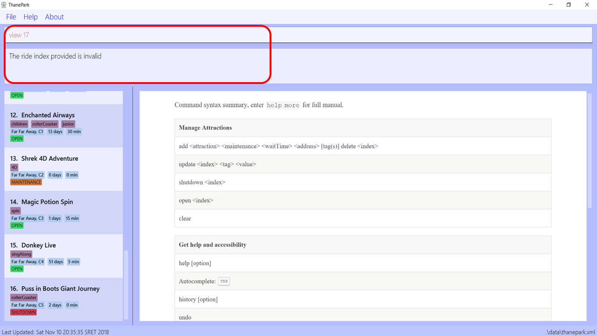
Figure 6. After executing
view 17The red box in the diagram above shows the error message when you try to enter an index that is not in the list, |
4.3.2. Viewing rides by their status: viewstatus
Displays all rides according to the status of the rides.
Format: viewstatus <status>
| There are only three statuses that are valid, namely open, shutdown and maintenance. |
Example 1: Note how the information within the red boxes changes when the
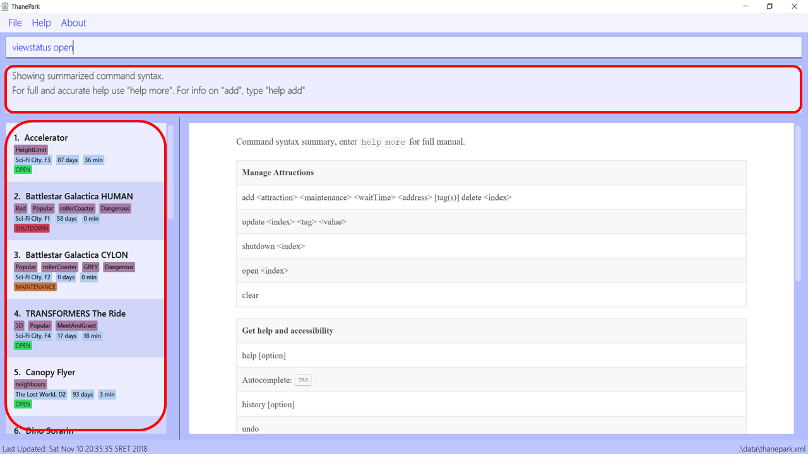
Figure 7. Before executing
viewstatus openIn the diagram above, note that the list of rides in the red box at the left contains rides with different statuses.
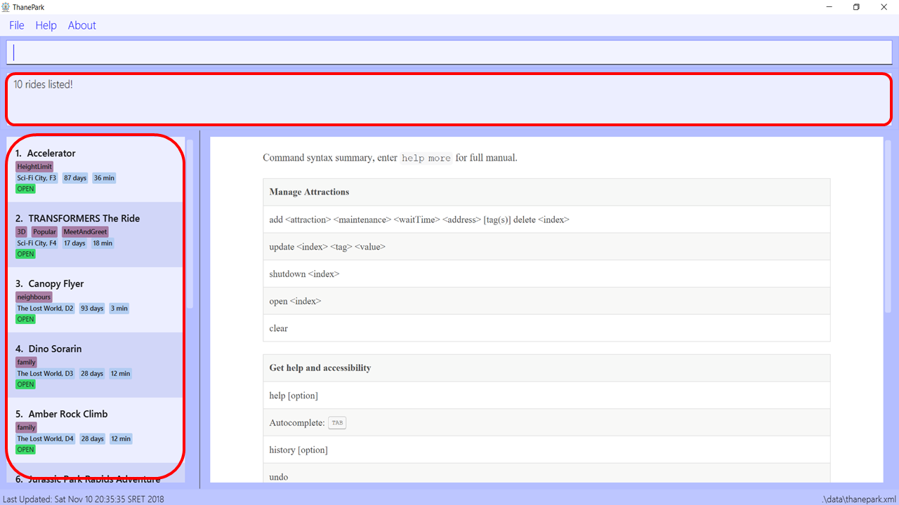
Figure 8. After executing
viewstatus openAs seen in the diagram above, once Example 2:
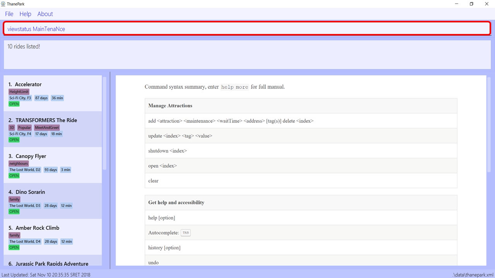
Figure 9. Before executing
viewstatus MainTenaNce command
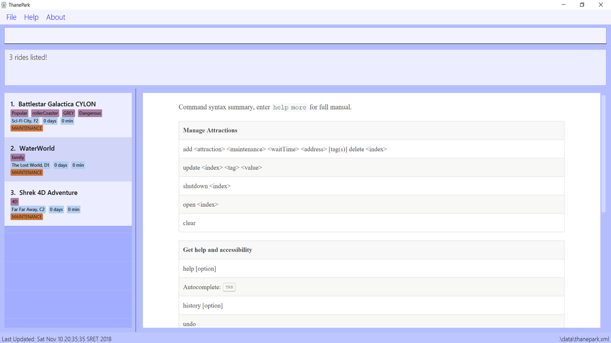
Figure 10. After executing
viewstatus MainTenaNce commandAs seen in the diagram above, ThanePark is able to read |
4.3.3. Viewing all available rides: viewall
Displays all available rides in a list.
Format: viewall
Example: Note how the information within the red boxes changes when the
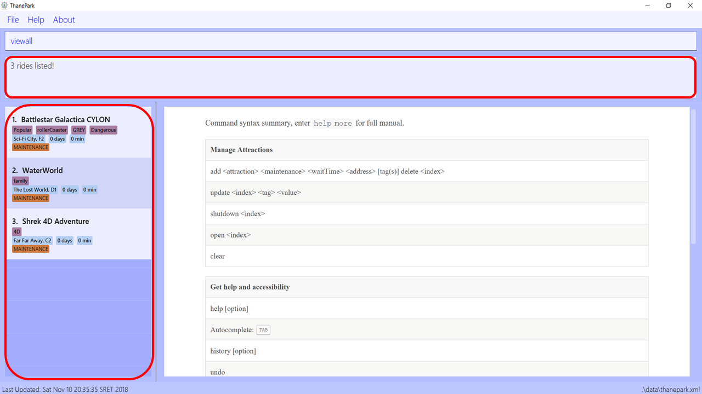
Figure 11. Before executing
viewall
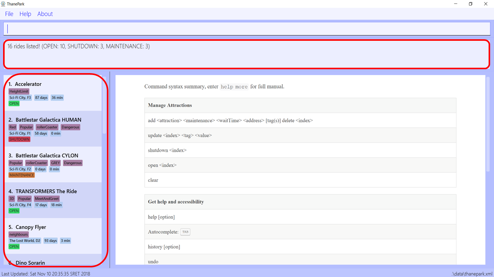
Figure 12. After executing
viewallAs seen in the diagram above, the response box at the top of the diagram will display the total number of rides, with a break down of the total number of rides of different statuses. The list box at the left of the diagram is also updated to show all the rides in ThanePark, regardless of status. |
4.4. Find the relevant list of rides
This section contains all commands related to finding rides that you need at any time.
4.4.1. Finding a particular attraction: find
Find a list of rides that the you need to check on. Case insensitive.
Can only find the name, the zone, and the tags of the attractions.
Format: find <[name] [[tag][keyword]…]>
Must include arguments when finding.
Here are some examples with images to let you follow along.
Examples:
The list of results should be like this if no changes were made to the application (ie. delete or add or update):
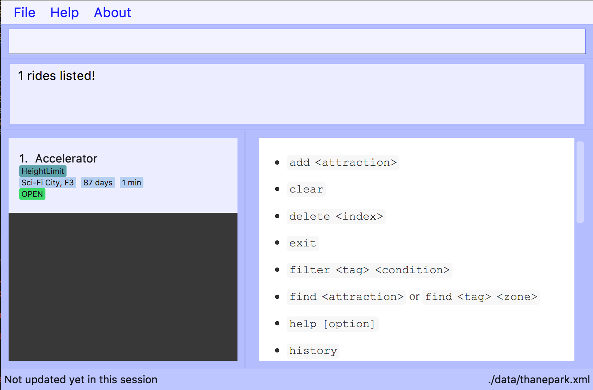
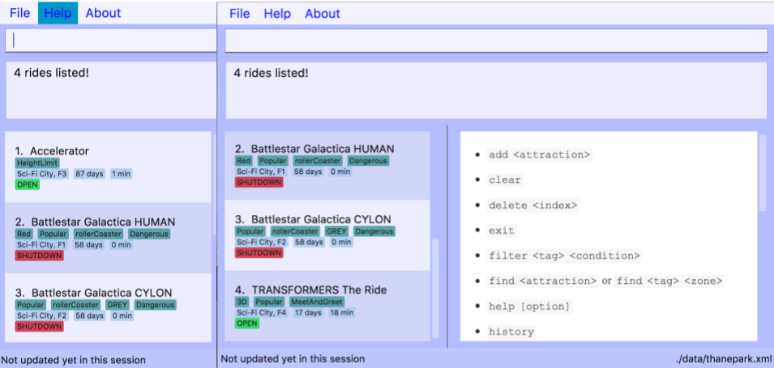
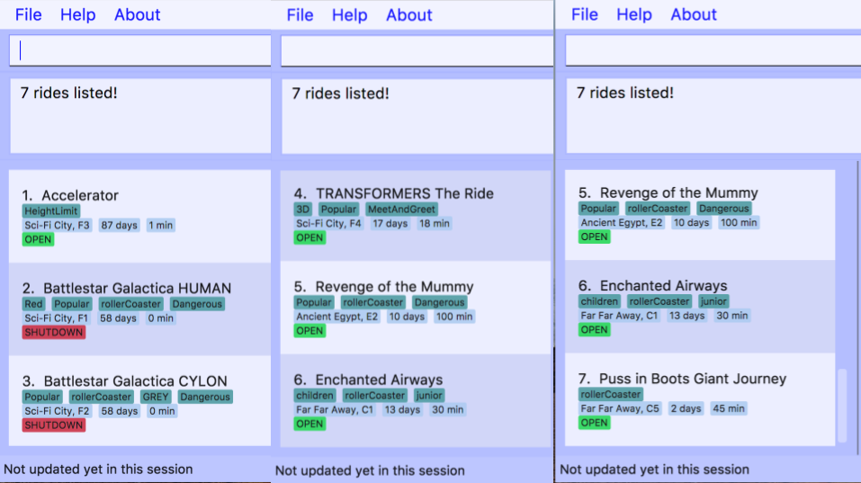
|
4.4.2. Finding rides that fits the given condition: filter
Display all rides that fits the condition in a list. It can only filter conditions that have numeric values i.e.
Maintenance and WaitTime.
Format: filter <tag> <condition> [[tag] [condition]…]
Can include more conditions as desired.
Examples:
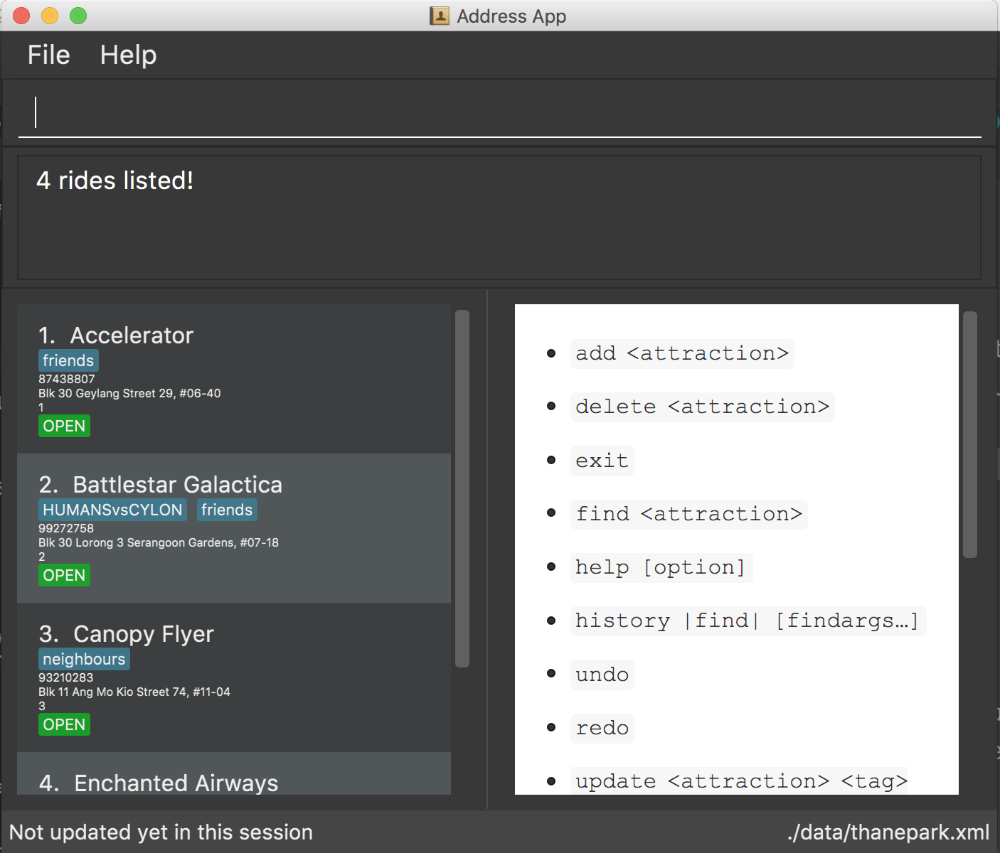
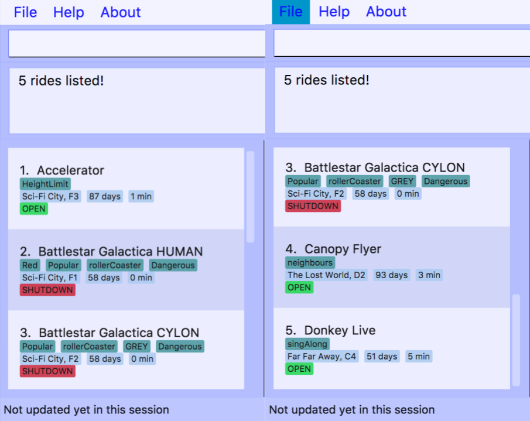
|
If a ride is selected, a find or filter is performed, the ride panel will still show the ride that was previously
selected. Future versions will automatically select the first ride on the list and allow you to see information about it
on the BrowserPanel or show the short help menu if no rides are found.
|
4.5. Add access for different type of users
This section contains all commands that is related to accessing the system.
All commands in this section have not been implemented. They will be implemented in v2.0.
|
4.5.1. Signing up as a user
Creates a new user profile to allow the user to access ThanePark.
Format: signup <username> <password>
4.5.2. Logging into the system
Logs in a user that has already signed up.
Format: login <username> <password>
4.5.3. Logging out of the system
Logs out a user from the system.
Format: logout
5. FAQ
Q: How do I transfer my data to another Computer?
A: Install the app in the other computer and overwrite the empty data file it creates with the file that contains the data of your previous ThanePark folder.
6. Command Summary
| Action | Syntax |
|---|---|
Manage Attractions |
|
Add |
|
Delete |
|
Update |
|
Shutdown |
|
Open |
|
Maintain |
|
Clear |
|
Get help and accessibility |
|
Help |
|
Using Autocomplete |
TAB |
History |
|
Undo |
|
Redo |
|
Exit |
|
View information on the list of rides |
|
View all |
|
View |
|
View status |
|
Find the relevant list of rides |
|
Find |
|
Filter |
|